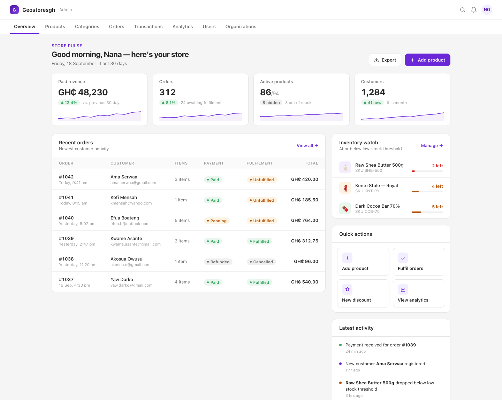
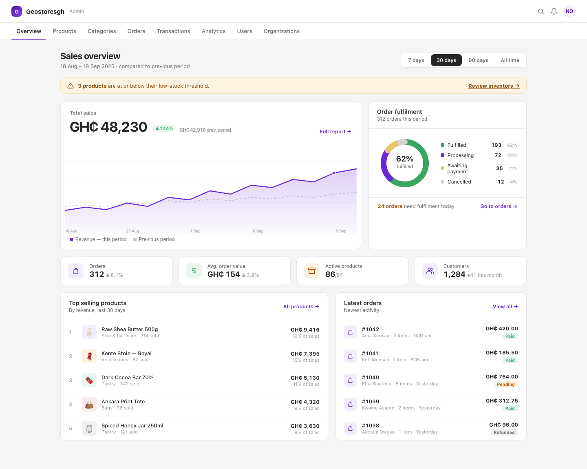
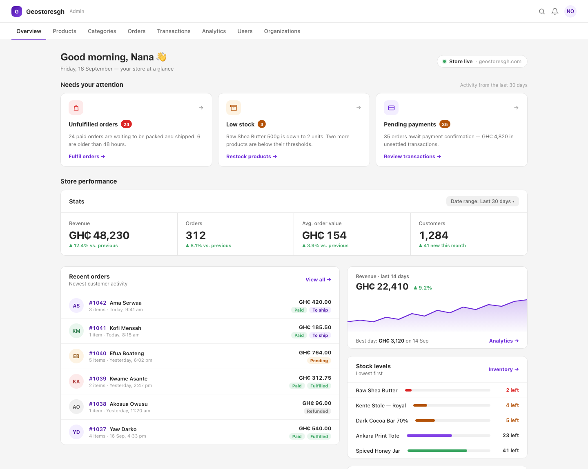

Three full-page mockups for the Geostoresgh admin landing page. Click any preview to open it full size.

Metric cards with sparklines and period deltas up top, then a dense recent-orders table with payment + fulfilment status pills. Inventory watch, quick actions and an activity feed on the right rail. The most "get work done" layout — data-dense but quiet.

Big revenue chart hero with a period selector and previous-period comparison, fulfilment donut, icon stat tiles, top-products ranking and a compact latest-orders feed. Best if the overview's job is reporting performance, not daily ops.

Personal greeting, then three "needs your attention" task cards (unfulfilled orders, low stock, pending payments) that route the admin straight into work. Stats strip, avatar-based order list, stock-level bars and a setup checklist on the rail. The most guided, action-first option.